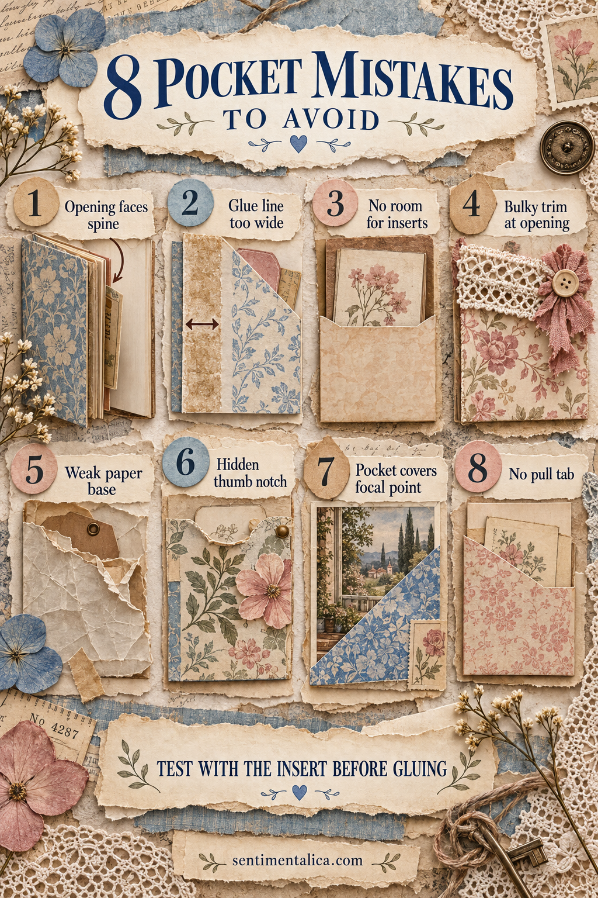

A journal pocket should invite you to tuck something inside it. If an insert catches, disappears or pulls the whole page out of shape, the problem is usually a small construction decision—not a lack of skill.
The easiest time to fix a pocket is before the glue dries. Keep the intended insert beside you while you build and test every fold with the journal partly closed.
1. The opening faces the spine
An insert needs a clear path. A side-opening pocket placed toward the spine forces your fingers into the binding and makes the card awkward to remove.
Turn the opening toward the outer edge. If that is impossible, use a top-opening pocket or add a long pull tab.
2. The glue line is too wide
A broad stripe of glue can steal a centimeter from each side. The finished pocket may look generous but hold almost nothing.
Use a narrow line just inside the edge. Double-sided tape is useful when you need a predictable seam width.
3. There is no room for the insert
Paper has thickness, especially when a card carries stitching or collage. Build around the actual insert, not its measurement on a ruler.
Wrap the pocket paper loosely around the card, crease it, remove the card and then glue. That tiny allowance changes everything.
4. Bulky trim sits at the opening
Buttons, layered lace and knotted ribbon catch the insert exactly where it must slide. Move raised decoration to the closed edge or bottom corner.
Near the opening, use flat details such as stamping, thin paper or two small stitches.
5. The pocket base is too weak
Fragile book paper can split when it repeatedly carries a tag. Back delicate paper with lightweight cardstock or another thin page before forming the pocket.
Reinforce only the area that needs strength. The front can remain soft and naturally aged.
6. The thumb notch is hidden
A notch works only when it tells the eye where to reach. Do not cover it with a cluster or place it against a busy pattern.
Cut the notch before gluing, then outline it lightly with ink if it needs more definition.
7. The pocket covers the focal point
It is easy to add a pocket after finishing a page and accidentally bury the most meaningful image. Treat the pocket as part of the layout from the beginning.
Position it low or to one side, and let the insert echo the page rather than compete with it.
8. The insert has no pull tab
A card that sits almost entirely inside a pocket needs a visible handle. Add ribbon, folded fabric, a reinforced paper tab or a small punched circle.
Keep the tab slim enough that it does not prevent the journal from closing.

The thirty-second pocket test
Slide the insert in and out three times. Hold the page vertically and check whether it falls out. Close the journal and look for new bulk. Finally, ask whether a person can immediately see how the pocket works.
A good pocket does not need to be complicated. It needs a clear opening, a little ease, enough strength and a reason to be on the page. Once those four things work, decoration becomes the enjoyable part.